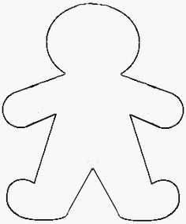

These are additional ideas for procedures that I haven't created yet
ABG draw
anoscopy
anterior hip reduction
auricular hematoma
Bartholin cyst drainage
burn debridement
cricothyrotomy
elbow reduction
felon
femoral central line
forearm compartments
ingrown nail
intercostal nerve block
lateral canthotomy
occipital nerve block
paronychia
posterior shoulder reduction
ring removal
sebaceous cyst drainage
shoulder aspiration
splinting
subclavian central line
suprapubic aspiration
tick removal
TMJ reduction
trochanteric bursa injection
vaginal foreign body
varicose vein bleeding
wrist fracture reduction